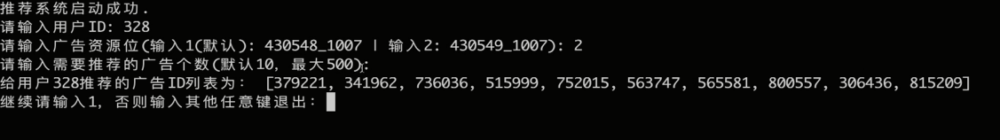

Recommendation System case
推荐系统学习笔记目录
个性化电商广告推荐系统介绍
数据集介绍
Ali_Display_Ad_Click是阿里巴巴提供的一个淘宝展示广告点击率预估数据集
数据集来源：天池竞赛
原始样本骨架raw_sample
淘宝网站中随机抽样了114万用户8天内的广告展示/点击日志（2600万条记录），构成原始的样本骨架。 字段说明如下：
- user_id：脱敏过的用户ID；
- adgroup_id：脱敏过的广告单元ID；
- time_stamp：时间戳；
- pid：资源位；
- noclk：为1代表没有点击；为0代表点击；
- clk：为0代表没有点击；为1代表点击；
用前面7天的做训练样本（20170506-20170512），用第8天的做测试样本（20170513）
广告基本信息表ad_feature
本数据集涵盖了raw_sample中全部广告的基本信息(约80万条目)。字段说明如下：
- adgroup_id：脱敏过的广告ID；
- cate_id：脱敏过的商品类目ID；
- campaign_id：脱敏过的广告计划ID；
- customer_id: 脱敏过的广告主ID；
- brand_id：脱敏过的品牌ID；
- price: 宝贝的价格
其中一个广告ID对应一个商品（宝贝），一个宝贝属于一个类目，一个宝贝属于一个品牌。
用户基本信息表user_profile
本数据集涵盖了raw_sample中全部用户的基本信息(约100多万用户)。字段说明如下：
- userid：脱敏过的用户ID；
- cms_segid：微群ID；
- cms_group_id：cms_group_id；
- final_gender_code：性别 1:男,2:女；
- age_level：年龄层次； 1234
- pvalue_level：消费档次，1:低档，2:中档，3:高档；
- shopping_level：购物深度，1:浅层用户,2:中度用户,3:深度用户
- occupation：是否大学生 ，1:是,0:否
- new_user_class_level：城市层级
用户的行为日志behavior_log
本数据集涵盖了raw_sample中全部用户22天内的购物行为(共七亿条记录)。字段说明如下：
user：脱敏过的用户ID；
time_stamp：时间戳；
btag：行为类型, 包括以下四种：
类型 | 说明
pv | 浏览
cart | 加入购物车
fav | 喜欢
buy | 购买
cate_id：脱敏过的商品类目id；
brand_id: 脱敏过的品牌id；
这里以user + time_stamp为key，会有很多重复的记录；这是因为我们的不同的类型的行为数据是不同部门记录的，在打包到一起的时候，实际上会有小的偏差（即两个一样的time_stamp实际上是差异比较小的两个时间）
项目效果展示

项目实现分析
主要包括
- 一份广告点击的样本数据raw_sample.csv：体现的是用户对不同位置广告点击、没点击的情况
- 一份广告基本信息数据ad_feature.csv：体现的是每个广告的类目(id)、品牌(id)、价格特征
- 一份用户基本信息数据user_profile.csv：体现的是用户群组、性别、年龄、消费购物档次、所在城市级别等特征
- 一份用户行为日志数据behavior_log.csv：体现用户对商品类目(id)、品牌(id)的浏览、加购物车、收藏、购买等信息
我们是在对非搜索类型的广告进行点击率预测和推荐(没有搜索词、没有广告的内容特征信息)
- 推荐业务处理主要流程： 召回 ===> 排序 ===> 过滤
- 离线处理业务流
- raw_sample.csv ==> 历史样本数据
- ad_feature.csv ==> 广告特征数据
- user_profile.csv ==> 用户特征数据
- raw_sample.csv + ad_feature.csv + user_profile.csv ==> CTR点击率预测模型
- behavior_log.csv ==> 评分数据 ==> user-cate/brand评分数据 ==> 协同过滤 ==> top-N cate/brand ==> 关联广告
- 协同过滤召回 ==> top-N cate/brand ==> 关联对应的广告完成召回
- 在线处理业务流
- 数据处理部分：
- 实时行为日志 ==> 实时特征 ==> 缓存
- 实时行为日志 ==> 实时商品类别/品牌 ==> 实时广告召回集 ==> 缓存
- 推荐任务部分：
- CTR点击率预测模型 + 广告/用户特征(缓存) + 对应的召回集(缓存) ==> 点击率排序 ==> top-N 广告推荐结果
- 数据处理部分：
- 离线处理业务流
- 涉及技术：Flume、Kafka、Spark-streming\HDFS、Spark SQL、Spark ML、Redis
- Flume：日志数据收集
- Kafka：实时日志数据处理队列
- HDFS：存储数据
- Spark SQL：离线处理
- Spark ML：模型训练
- Redis：缓存
点击率预测(CTR–Click-Through-Rate)概念
电商广告推荐通常使用广告点击率(CTR–Click-Through-Rate)预测来实现
点击率预测 VS 推荐算法
点击率预测需要给出精准的点击概率，比如广告A点击率0.5%、广告B的点击率0.12%等；而推荐算法很多时候只需要得出一个最优的次序A>B>C即可。
点击率预测使用的算法通常是如逻辑回归(Logic Regression)这样的机器学习算法，而推荐算法则是一些基于协同过滤推荐、基于内容的推荐等思想实现的算法
点击率 VS 转化率
点击率预测是对每次广告的点击情况做出预测，可以判定这次为点击或不点击，也可以给出点击或不点击的概率
转化率指的是从状态A进入到状态B的概率，电商的转化率通常是指到达网站后，进而有成交记录的用户比率，如用户成交量/用户访问量
搜索和非搜索广告点击率预测的区别
搜索中有很强的搜索信号-“查询词(Query)”，查询词和广告内容的匹配程度很大程度影响了点击概率，搜索广告的点击率普遍较高
非搜索广告（例如展示广告，信息流广告）的点击率的计算很多就来源于用户的兴趣和广告自身的特征，以及上下文环境。通常好位置能达到百分之几的点击率。对于很多底部的广告，点击率非常低，常常是千分之几，甚至更低
根据用户行为数据创建ALS模型并召回商品
用户行为数据拆分
方便练习可以对数据做拆分处理
- pandas的数据分批读取 chunk 厚厚的一块 相当大的数量或部分
1
2
3
4
5
6
7
8
9
10
11
12import pandas as pd
reader = pd.read_csv('behavior_log.csv',chunksize=100,iterator=True)
count = 0;
for chunk in reader:
count += 1
if count ==1:
chunk.to_csv('test4.csv',index = False)
elif count>1 and count<1000:
chunk.to_csv('test4.csv',index = False, mode = 'a',header = False)
else:
break
pd.read_csv('test4.csv')
预处理behavior_log数据集
- 创建spark session
1 | import os |
- 从hdfs中加载csv文件为DataFrame
1 | # 从hdfs加载CSV文件为DataFrame |
显示结果:
1 | +------+----------+----+-----+------+ |
- 从hdfs加载数据为dataframe，并设置结构
1 | from pyspark.sql.types import StructType, StructField, StringType, IntegerType, LongType |
显示结果:
1 | +------+----------+----+------+-------+ |
- 分析数据集字段的类型和格式
- 查看是否有空值
- 查看每列数据的类型
- 查看每列数据的类别情况
1 | print("查看userId的数据情况：", behavior_log_df.groupBy("userId").count().count()) |
1 | 查看user的数据情况： 1136340 |
1 | print("查看btag的数据情况：", behavior_log_df.groupBy("btag").count().collect()) # collect会把计算结果全部加载到内存，谨慎使用 |
1 | 查看btag的数据情况： [Row(btag='buy', count=9115919), Row(btag='fav', count=9301837), Row(btag='cart', count=15946033), Row(btag='pv', count=688904345)] |
1 | print("查看cateId的数据情况：", behavior_log_df.groupBy("cateId").count().count()) |
1 | 查看cateId的数据情况： 12968 |
1 | print("查看brandId的数据情况：", behavior_log_df.groupBy("brandId").count().count()) |
1 | 查看brandId的数据情况： 460561 |
1 | print("判断数据是否有空值：", behavior_log_df.count(), behavior_log_df.dropna().count()) |
1 | 判断数据是否有空值： 723268134 723268134 |
- pivot透视操作，把某列里的字段值转换成行并进行聚合运算(pyspark.sql.GroupedData.pivot)
- 如果透视的字段中的不同属性值超过10000个，则需要设置spark.sql.pivotMaxValues，否则计算过程中会出现错误。文档介绍。
1 | # 统计每个用户对各类商品的pv、fav、cart、buy数量 |
显示效果:
1 | root |
- 统计每个用户对各个品牌的pv、fav、cart、buy数量并保存结果
1 | # 统计每个用户对各个品牌的pv、fav、cart、buy数量 |
根据用户对类目偏好打分训练ALS模型
- 根据您统计的次数 + 打分规则 ==> 偏好打分数据集 ==> ALS模型
1 | # spark ml的模型训练是基于内存的，如果数据过大，内存空间小，迭代次数过多的化，可能会造成内存溢出，报错 |
显示结果:
1 | root |
- 处理每一行数据：r表示row对象
1 | def process_row(r): |
- 返回一个PythonRDD类型
1 | # 返回一个PythonRDD类型，此时还没开始计算 |
显示结果:
1 | DataFrame[userId: bigint, cateId: bigint, rating: double] |
- 用户对商品类别的打分数据
1 | # 用户对商品类别的打分数据 |
显示结果:
1 | DataFrame[userId: bigint, cateId: bigint, rating: double] |
- 通常如果USER-ITEM打分数据应该是通过一下方式进行处理转换为USER-ITEM-MATRIX

但这里我们将使用的Spark的ALS模型进行CF推荐，因此注意这里数据输入不需要提前转换为矩阵，直接是 USER-ITEM-RATE的数据
基于Spark的ALS隐因子模型进行CF评分预测
ALS的意思是交替最小二乘法（Alternating Least Squares），是Spark2.*中加入的进行基于模型的协同过滤（model-based CF）的推荐系统算法。
同SVD，它也是一种矩阵分解技术，对数据进行降维处理。
注意：由于数据量巨大，因此这里也不考虑基于内存的CF算法
1 | # 使用pyspark中的ALS矩阵分解方法实现CF评分预测 |
- 模型训练好后，调用方法进行使用，具体API查看
1 | # model.recommendForAllUsers(N) 给所有用户推荐TOP-N个物品 |
显示结果:
1 | +------+--------------------+ |
- model.recommendForUserSubset 给部分用户推荐TOP-N个物品
1 | # 注意：recommendForUserSubset API，2.2.2版本中无法使用 |
显示结果:
1 | +------+--------------------+ |
- transform中提供userId和cateId可以对打分进行预测，利用打分结果排序后
1 | # transform中提供userId和cateId可以对打分进行预测，利用打分结果排序后，同样可以实现TOP-N的推荐 |
显示结果:
1 | +------+--------------------+ |
- 召回到redis
1 | import redis |
显示结果:
1 | 1136340 |
根据用户对品牌偏好打分训练ALS模型
1 | from pyspark.sql.types import StructType, StructField, StringType, IntegerType |
基于Spark的ALS隐因子模型进行CF评分预测
ALS的意思是交替最小二乘法（Alternating Least Squares），是Spark中进行基于模型的协同过滤（model-based CF）的推荐系统算法，也是目前Spark内唯一一个推荐算法。
同SVD，它也是一种矩阵分解技术，但理论上，ALS在海量数据的处理上要优于SVD。
更多了解：pyspark.ml.recommendation.ALS
注意：由于数据量巨大，因此这里不考虑基于内存的CF算法
使用pyspark中的ALS矩阵分解方法实现CF评分预测
1 | # 使用pyspark中的ALS矩阵分解方法实现CF评分预测 |
CTR预估数据准备
分析并预处理raw_sample数据集
1 | # 从HDFS中加载样本数据信息 |
显示结果:
1 | +------+----------+----------+-----------+------+---+ |
- 分析数据集字段的类型和格式
- 查看是否有空值
- 查看每列数据的类型
- 查看每列数据的类别情况
1 | print("样本数据集总条目数：", df.count()) |
显示结果:
1 | 样本数据集总条目数： 26557961 |
- 使用dataframe.withColumn更改df列数据结构；使用dataframe.withColumnRenamed更改列名称
1 | # 更改表结构，转换为对应的数据类型 |
显示结果:
1 | root |
特征选取（Feature Selection）
特征选择就是选择那些靠谱的Feature，去掉冗余的Feature，对于搜索广告，Query关键词和广告的匹配程度很重要；但对于展示广告，广告本身的历史表现，往往是最重要的Feature。
根据经验，该数据集中，只有广告展示位pid对比较重要，且数据不同数据之间的占比约为6:4，因此pid可以作为一个关键特征
nonclk和clk在这里是作为目标值，不做为特征
热独编码 OneHotEncode
热独编码是一种经典编码，是使用N位状态寄存器(如0和1)来对N个状态进行编码，每个状态都由他独立的寄存器位，并且在任意时候，其中只有一位有效。
假设有三组特征，分别表示年龄，城市，设备；
[“男”, “女”][0,1]
[“北京”, “上海”, “广州”][0,1,2]
[“苹果”, “小米”, “华为”, “微软”][0,1,2,3]
传统变化： 对每一组特征，使用枚举类型，从0开始；
[“男“，”上海“，”小米“]=[ 0,1,1]
[“女“，”北京“，”苹果“] =[1,0,0]
传统变化后的数据不是连续的，而是随机分配的，不容易应用在分类器中
而经过热独编码，数据会变成稀疏的，方便分类器处理：
[“男“，”上海“，”小米“]=[ 1,0,0,1,0,0,1,0,0]
[“女“，”北京“，”苹果“] =[0,1,1,0,0,1,0,0,0]
这样做保留了特征的多样性，但是也要注意如果数据过于稀疏(样本较少、维度过高)，其效果反而会变差
Spark中使用热独编码
注意：热编码只能对字符串类型的列数据进行处理
StringIndexer：对指定字符串列数据进行特征处理，如将性别数据“男”、“女”转化为0和1
OneHotEncoder：对特征列数据，进行热编码，通常需结合StringIndexer一起使用
Pipeline：让数据按顺序依次被处理，将前一次的处理结果作为下一次的输入
特征处理
1 | '''特征处理''' |
显示结果:
1 | +------+----------+---------+-----------+------+---+-----------+-------------+ |
- 返回字段pid_value是一个稀疏向量类型数据 pyspark.ml.linalg.SparseVector
1 | from pyspark.ml.linalg import SparseVector |
显示结果:
1 | (4,[1,3],[3.0,4.0]) |
- 查看最大时间
1 | new_df.sort("timestamp", ascending=False).show() |
1 | +------+----------+---------+-----------+------+---+-----------+-------------+ |
1 | # 本样本数据集共计8天数据 |
显示结果:
1 | 该时间之前的数据为训练样本，该时间以后的数据为测试样本： 2017-05-12 23:59:46 |
- 训练样本
1 | # 训练样本： |
显示结果:
1 | 训练样本个数： |
分析并预处理ad_feature数据集
1 | # 从HDFS中加载广告基本信息数据，返回spark dafaframe对象 |
显示结果:
1 | +----------+-------+-----------+--------+------+-----+ |
1 | # 注意：由于本数据集中存在NULL字样的数据，无法直接设置schema，只能先将NULL类型的数据处理掉，然后进行类型转换 |
显示结果:
1 | root |
- 查看各项数据的特征
1 | print("总广告条数：",df.count()) # 数据条数 |
显示结果:
1 | 总广告条数： 846811 |
特征选择
- cateId：脱敏过的商品类目ID；
- campaignId：脱敏过的广告计划ID；
- customerId:脱敏过的广告主ID；
- brandId：脱敏过的品牌ID；
以上四个特征均属于分类特征，但由于分类值个数均过于庞大，如果去做热独编码处理，会导致数据过于稀疏 且当前我们缺少对这些特征更加具体的信息，（如商品类目具体信息、品牌具体信息等），从而无法对这些特征的数据做聚类、降维处理 因此这里不选取它们作为特征
而只选取price作为特征数据，因为价格本身是一个统计类型连续数值型数据，且能很好的体现广告的价值属性特征，通常也不需要做其他处理(离散化、归一化、标准化等)，所以这里直接将当做特征数据来使用
分析并预处理user_profile数据集
1 | # 从HDFS加载用户基本信息数据 |
显示结果:
1 | +------+---------+------------+-----------------+---------+------------+--------------+----------+---------------------+ |
1 | # 注意：这里的null会直接被pyspark识别为None数据，也就是na数据，所以这里可以直接利用schema导入数据 |
显示结果:
1 | root |
- 显示特征情况
1 | print("分类特征值个数情况: ") |
显示内容:
1 | 分类特征值个数情况: |
缺失值处理
注意，一般情况下：
- 缺失率低于10%：可直接进行相应的填充，如默认值、均值、算法拟合等等；
- 高于10%：往往会考虑舍弃该特征
- 特征处理，如1维转多维
但根据我们的经验，我们的广告推荐其实和用户的消费水平、用户所在城市等级都有比较大的关联，因此在这里pvalue_level、new_user_class_level都是比较重要的特征，我们不考虑舍弃
缺失值处理方案：
- 填充方案：结合用户的其他特征值，利用随机森林算法进行预测；但产生了大量人为构建的数据，一定程度上增加了数据的噪音
- 把变量映射到高维空间：如pvalue_level的1维数据，转换成是否1、是否2、是否3、是否缺失的4维数据；这样保证了所有原始数据不变，同时能提高精确度，但这样会导致数据变得比较稀疏，如果样本量很小，反而会导致样本效果较差，因此也不能滥用
填充方案
- 利用随机森林对pvalue_level的缺失值进行预测
1 | from pyspark.mllib.regression import LabeledPoint |
- Labeled point
A labeled point is a local vector, either dense or sparse, associated with a label/response. In MLlib, labeled points are used in supervised learning algorithms. We use a double to store a label, so we can use labeled points in both regression and classification. For binary classification, a label should be either 0 (negative) or 1 (positive). For multiclass classification, labels should be class indices starting from zero: 0, 1, 2, ….
标记点是与标签/响应相关联的密集或稀疏的局部矢量。在MLlib中，标记点用于监督学习算法。我们使用double来存储标签，因此我们可以在回归和分类中使用标记点。对于二进制分类，标签应为0（负）或1（正）。对于多类分类，标签应该是从零开始的类索引：0, 1, 2, …。
Python
A labeled point is represented by LabeledPoint.
标记点表示为 LabeledPoint。
Refer to the LabeledPoint Python docs for more details on the API.
有关API的更多详细信息，请参阅LabeledPointPython文档。
1 | from pyspark.mllib.linalg import SparseVector |
1 | from pyspark.mllib.tree import RandomForest |
1 | # 预测单个数据 |
显示结果:
1 | 1.0 |
- 筛选出缺失值条目
1 | pl_na_df = user_profile_df.na.fill(-1).where("pvalue_level=-1") |
显示结果:
1 | +------+---------+------------+-----------------+---------+------------+--------------+----------+--------------------+ |
- 转换为pandas dataframe
1 | # 这里数据量比较小，直接转换为pandas dataframe来处理，因为方便，但注意如果数据量较大不推荐，因为这样会把全部数据加载到内存中 |
- 与非缺失数据进行拼接，完成pvalue_level的缺失值预测
1 | new_user_profile_df = user_profile_df.dropna(subset=["pvalue_level"]).unionAll(spark.createDataFrame(pdf, schema=schema)) |
显示结果:
1 | +------+---------+------------+-----------------+---------+------------+--------------+----------+--------------------+ |
- 利用随机森林对new_user_class_level的缺失值进行预测
1 | from pyspark.mllib.regression import LabeledPoint |
显示结果:
1 | 1.0 |
1 | nul_na_df = user_profile_df.na.fill(-1).where("new_user_class_level=-1") |
- 显示结果:
1 | +------+---------+------------+-----------------+---------+------------+--------------+----------+--------------------+ |
- 总结：可以发现由于这两个字段的缺失过多，所以预测出来的值已经大大失真，但如果缺失率在10%以下，这种方法是比较有效的一种
1 | user_profile_df = user_profile_df.na.fill(-1) |
显示结果:
1 | +------+---------+------------+-----------------+---------+------------+--------------+----------+--------------------+ |
- 低维转高维方式
- 我们接下来采用将变量映射到高维空间的方法来处理数据，即将缺失项也当做一个单独的特征来对待，保证数据的原始性
由于该思想正好和热独编码实现方法一样，因此这里直接使用热独编码方式处理数据
- 我们接下来采用将变量映射到高维空间的方法来处理数据，即将缺失项也当做一个单独的特征来对待，保证数据的原始性
1 | from pyspark.ml.feature import OneHotEncoder |
显示结果:
1 | +------+---------+------------+-----------------+---------+------------+--------------+----------+--------------------+ |
- 使用热编码转换new_user_class_level的一维数据为多维
1 | stringindexer = StringIndexer(inputCol='new_user_class_level', outputCol='nucl_onehot_feature') |
显示结果:
1 | +------+---------+------------+-----------------+---------+------------+--------------+----------+--------------------+-----------------+---------------+-------------------+-----------------+ |
- 用户特征合并
1 | from pyspark.ml.feature import VectorAssembler |
显示结果:
1 | +------+---------+------------+-----------------+---------+------------+--------------+----------+--------------------+-----------------+---------------+-------------------+-----------------+--------------------+ |
1 | feature_df.select("features").show() |
显示结果:
1 | +--------------------+ |
- 特征选取
除了前面处理的pvalue_level和new_user_class_level需要作为特征以外，(能体现出用户的购买力特征)，还有：
前面分析的以下几个分类特征值个数情况:
1 | - cms_segid: 97 |
根据经验，以上几个分类特征都一定程度能体现用户在购物方面的特征，且类别都较少，都可以用来作为用户特征
LR实现CTR预估
Spark逻辑回归(LR)模型使用介绍
1 | from pyspark.ml.feature import VectorAssembler |
显示结果:
1 | 数据集： |
- 逻辑回归训练模型
1 | from pyspark.ml.classification import LogisticRegression |
显示结果:
1 | +-------+---+-------------+---------+----------+------+--------------------+--------------------+--------------------+----------+ |
基于LR的点击率预测模型训练
本小节主要根据广告点击样本数据集(raw_sample)、广告基本特征数据集(ad_feature)、用户基本信息数据集(user_profile)构建出了一个完整的样本数据集，并按日期划分为了训练集(前七天)和测试集(最后一天)，利用逻辑回归进行训练。
训练模型时，通过对类别特征数据进行处理，一定程度达到提高了模型的效果
1 | '''从HDFS中加载样本数据信息''' |
显示结果:
1 | root |
- 从HDFS中加载广告基本信息数据
1 | _ad_feature_df = spark.read.csv("hdfs://localhost:9000/datasets/ad_feature.csv", header=True) |
显示结果:
1 | root |
- 从HDFS加载用户基本信息数据
1 | from pyspark.sql.types import StructType, StructField, StringType, IntegerType, LongType, FloatType |
显示结果:
1 | +------+---------+------------+-----------------+---------+------------+--------------+----------+--------------------+-----------------+---------------+-------------------+-----------------+ |
- 热编码中：”pvalue_level”特征对应关系:
1 | +------------+----------------------+ |
- “new_user_class_level”的特征对应关系
1 | +--------------------+------------------------+ |
1 | user_profile_df.groupBy("pvalue_level").min("pl_onehot_feature").show() |
显示结果:
1 | +------------+----------------------+ |
- Dataframe数据合并：pyspark.sql.DataFrame.join
1 | # raw_sample_df和ad_feature_df合并条件 |
显示结果:
1 | root |
- 训练CTRModel_Normal：直接将对应的特征的特征值组合成对应的特征向量进行训练
1 | # 剔除冗余、不需要的字段 |
显示结果:
1 | 剔除空值数据后，还剩： 25029435 |
- 根据特征字段计算出特征向量，并划分出训练数据集和测试数据集
1 | from pyspark.ml.feature import VectorAssembler |
显示结果:
1 | +----------+---+-------------+------+---------+------------+-----------------+---------+--------------+----------+---------------+-----------------+--------------------+ |
- 创建逻辑回归训练器，并训练模型：LogisticRegression、 LogisticRegressionModel
1 | from pyspark.ml.classification import LogisticRegression |
显示结果:
1 | +---+-----------+--------------------+----------+ |
- 查看样本中点击的被实际点击的条目的预测情况
1 | result_1.filter(result_1.clk==1).select("clk", "price", "probability", "prediction").sort("probability").show(100) |
显示结果:
1 | +---+-----------+--------------------+----------+ |
训练CTRModel_AllOneHot
- “pid_value”, 类别型特征，已被转换为多维特征==> 2维
- “price”, 统计型特征 ===> 1维
- “cms_segid”, 类别型特征，约97个分类 ===> 1维
- “cms_group_id”, 类别型特征，约13个分类 ==> 1维
- “final_gender_code”, 类别型特征，2个分类 ==> 1维
- “age_level”, 类别型特征，7个分类 ==> 1维
- “shopping_level”, 类别型特征，3个分类 ==> 1维
- “occupation”, 类别型特征，2个分类 ==> 1维
- “pl_onehot_value”, 类别型特征，已被转换为多维特征 ==> 4维
- “nucl_onehot_value” 类别型特征，已被转换为多维特征 ==> 5维
类别性特征都可以考虑进行热独编码，将单一变量变为多变量，相当于增加了相关特征的数量
- “cms_segid”, 类别型特征，约97个分类 ===> 97维 舍弃
- “cms_group_id”, 类别型特征，约13个分类 ==> 13维
- “final_gender_code”, 类别型特征，2个分类 ==> 2维
- “age_level”, 类别型特征，7个分类 ==>7维
- “shopping_level”, 类别型特征，3个分类 ==> 3维
- “occupation”, 类别型特征，2个分类 ==> 2维
但由于cms_segid分类过多，这里考虑舍弃，避免数据过于稀疏
1 | datasets_1.first() |
显示结果:
1 | datasets_1.first() |
1 | # 先将下列五列数据转为字符串类型，以便于进行热独编码 |
- “cms_group_id”特征对应关系：
1 | +------------+-------------------------+ |
- “final_gender_code”特征对应关系：
1 | +-----------------+------------------------------+ |
- “age_level”特征对应关系：
1 | +---------+----------------------+ |
- “shopping_level”特征对应关系：
1 | |shopping_level|min(shopping_level_feature)| |
- “occupation”特征对应关系：
1 | +----------+-----------------------+ |
1 | datasets_2.groupBy("cms_group_id").min("cms_group_id_feature").show() |
显示结果:
1 | +------------+-------------------------+ |
1 | # 由于热独编码后，特征字段不再是之前的字段，重新定义特征值字段 |
显示结果:
1 | root |
- 创建逻辑回归训练器，并训练模型
1 | from pyspark.ml.classification import LogisticRegression |
显示结果:
1 | +---+-----------+--------------------+----------+ |
1 | result_2.filter(result_2.clk==1).select("clk", "price", "probability", "prediction").sort("probability").show(100) |
显示结果:
1 | +---+-----------+--------------------+----------+ |
离线推荐数据缓存
离线数据缓存之离线召回集
这里主要是利用我们前面训练的ALS模型进行协同过滤召回，但是注意，我们ALS模型召回的是用户最感兴趣的类别，而我们需要的是用户可能感兴趣的广告的集合，因此我们还需要根据召回的类别匹配出对应的广告。
所以这里我们除了需要我们训练的ALS模型以外，还需要有一个广告和类别的对应关系。
1 | # 从HDFS中加载广告基本信息数据，返回spark dafaframe对象 |
- 根据指定的类别找到对应的广告
1 | import numpy as np |
显示结果:
1 | 313 138953.0 |
- 利用ALS模型进行类别的召回
1 | # 加载als模型，注意必须先有spark上下文管理器，即sparkContext，但这里sparkSession创建后，自动创建了sparkContext |
显示结果:
1 | DataFrame[id: int, features: array<float>] |
1 | import pandas as pd |
显示结果:
1 | cateId |
1 | cateId_df.insert(0, "userId", np.array([8 for i in range(6769)])) |
显示结果:
1 | userId cateId |
- 传入 userid、cataId的df，对应预测值进行排序
1 | als_model.transform(spark.createDataFrame(cateId_df)).sort("prediction", ascending=False).na.drop().show() |
显示结果:
1 | +------+------+----------+ |
1 | import numpy as np |
离线数据缓存之离线特征
1 | # "pid", 广告资源位，属于场景特征，也就是说，每一种广告通常是可以防止在多种资源外下的 |
- 从HDFS中加载广告基本信息数据
1 | _ad_feature_df = spark.read.csv("hdfs://localhost:9000/datasets/ad_feature.csv", header=True) |
- 从HDFS加载用户基本信息数据
1 | from pyspark.sql.types import StructType, StructField, StringType, IntegerType, LongType, FloatType |
显示结果:
1 | DataFrame[userId: int, cms_segid: int, cms_group_id: int, final_gender_code: int, age_level: int, pvalue_level: int, shopping_level: int, occupation: int, new_user_class_level: int] |
1 | def foreachPartition2(partition): |
实时产生推荐结果
推荐任务处理
CTR预测模型 + 特征 ==> 预测结果 ==> TOP-N列表
热编码中：”pvalue_level”特征对应关系:
1 | +------------+----------------------+ |
- “new_user_class_level”的特征对应关系：
1 | +--------------------+------------------------+ |
1 | pvalue_level_rela = {-1: 0, 3:3, 1:2, 2:1} |
- “cms_group_id”特征对应关系：
1 | +------------+-------------------------+ |
1 | cms_group_id_rela = { |
- “final_gender_code”特征对应关系：
1 | +-----------------+------------------------------+ |
1 | final_gender_code_rela = {1:1, 2:0} |
- “age_level”特征对应关系：
1 | +---------+----------------------+ |
1 | age_level_rela = {3:0, 0:6, 5:2, 6:5, 1:4, 4:1, 2:3} |
- “shopping_level”特征对应关系：
1 | |shopping_level|min(shopping_level_feature)| |
1 | shopping_level_rela = {3:0, 1:2, 2:1} |
- “occupation”特征对应关系：
1 | +----------+-----------------------+ |
1 | occupation_rela = {0:0, 1:1} |
- 特征获取
1 | import redis |
- 载入训练好的模型
1 | from pyspark.ml.classification import LogisticRegressionModel |
显示结果:
1 | +------+---------+--------------------+ |
1 | prediction = CTR_model.transform(datasets).sort("probability") |
1 | +------+---------+--------------------+--------------------+--------------------+----------+ |
- TOP-20
1 | # TOP-20 |
显示结果:
1 | [Row(adgroupId=631204), |
1 | [i.adgroupId for i in prediction.select("adgroupId").head(20)] |
显示结果:
1 | [631204, |